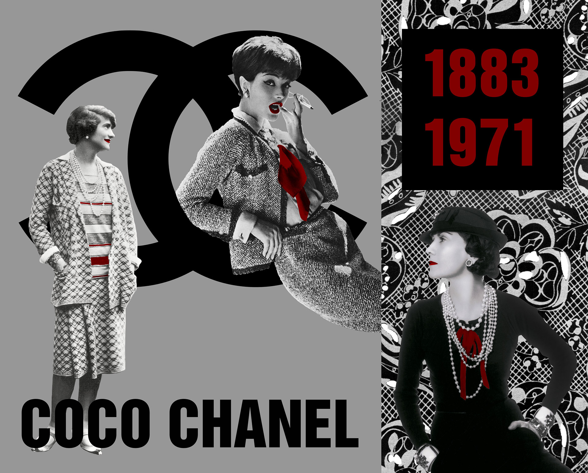

Graphic Design
A tribute to Coco Chanel and her legacy in changing the fashion industry. She's known for using mostly black and white with a few pops of color, which I've added with the quintessential red lipstick. The two figures other than her are a 1920's design in jersey knit, which she pioneered, and the famous Chanel suit from the 50's. The printed pattern behind her is a camellia print she made.

This type poster for the font ITC Avant Garde was created to encapsulate the history and showcase the design of the font. The color scheme was inspired by the original Avant Garde magazine spreads but given a modern twist. I wanted to highlight the ligatures that this font is known for so I created the graphic interlocking letters, which is then highlighted by the color blocks in the background.
This quadriptych of four identical illustations is a color study using different color palettes. I tried to convey different moods with each piece though the use of color.